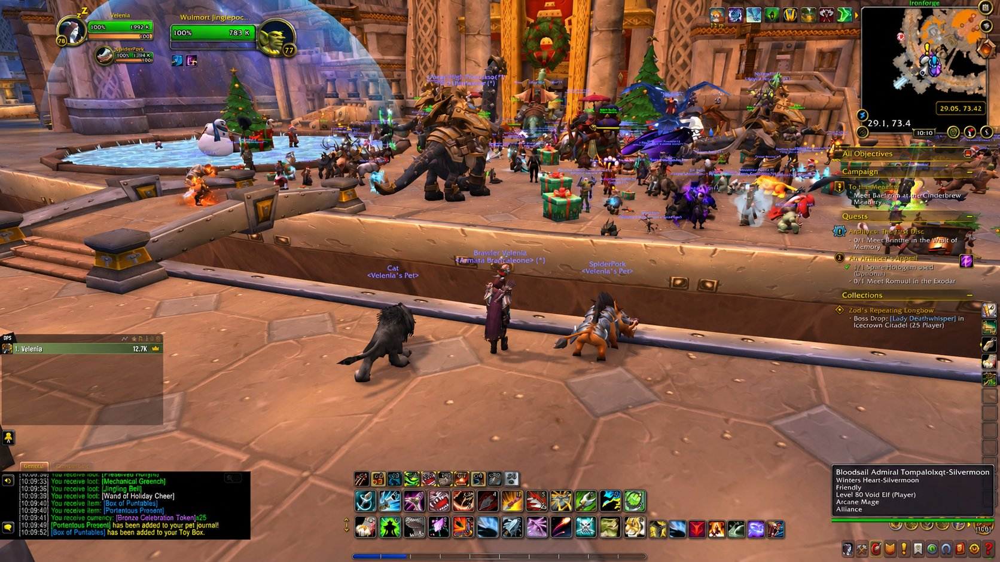

Find the missing names.
Discover what happened to an old survey expedition erased from the family records.
The Keeper of Unmarked Trails
A dwarf can inherit a mountain, a title or a name. Thorgar inherited a compass that points somewhere no map admits exists—and a stubborn conviction that a lost road is not the same as a forgotten one.
“A map tells ye where the path goes. It never tells ye who was left behind.”
Thorgar Ironbeard does not claim to have explored the whole world. He is a hunter by practice and an amateur surveyor by temperament: he notices the shape of a hill, the direction of a broken branch, a footprint in fresh snow, the way a road avoids a stretch of ground without explanation. He is at ease with silence. He is less at ease with the people who turn silence into legend.
He is proudly dwarven, affectionate toward Ironforge and his family traditions, yet stubborn enough to challenge the certainty of his elders. A well-told tale is a pleasure; a badly measured bridge is a danger. For him a map is a promise to the next traveller that someone cared whether they arrived home.
His story is about responsibility: learning that finding the right path means little if he cannot admit when his own direction was wrong.

Discover what happened to an old survey expedition erased from the family records.
He fears that certainty and pride may cost another traveller their life.
He must learn that maps are better when people correct them together.
These scenes belong to the planned roleplay backstory and do not represent activities performed in the game.
Thorgar grew up among tools, worn charts and quarrels about measurements in a modest Ironforge household. His father repaired field instruments, not weapons for kings; his mother kept survey ledgers and taught him that a place on a map was worth nothing without the people who used it. He learned to count paces before he learned to tell a convincing lie. When the adults drank and argued over old maps, he would quietly measure their crooked table to see which of them was right.
He loved the warmth of the forges, but not the idea that every Ironbeard was destined to remain beside one. The first time he saw a caravan depart through the gates, he envied not its cargo but the unknown roads ahead.
A travelling trail-watcher named Brunna Stonepath, an original character in Thorgar's personal lore, taught him the craft of patient tracking. She was not impressed by the speed of his aim. “A careless arrow can still find its mark,” she told him. “A careless hunter can leave three others to die after it.” From Brunna he learned to travel with few possessions, to learn the needs of a beast before pursuing it, and to regard a companion animal as a partner rather than equipment.
He has never forgotten the first lesson she gave without words: she made him spend an entire afternoon watching a path that no creature crossed. When he finally asked what he was supposed to see, she said, “That there are places even the hungry know to avoid.”
Among the Ironbeard family papers, Thorgar discovered a damaged survey report describing a route marked by six stone cairns. The document carried seven signatures, but one name had been scraped away. A later note insisted the expedition returned without incident. A different hand had written beside it: Do not count the seventh.
When he asked his relatives, the conversation ended too quickly. They warned him against reading history as a puzzle. Thorgar, who had never confused silence with proof, copied the damaged lines and asked no further questions—at least not aloud.
A small brass compass from the same collection sometimes settled at an angle that did not match the others on the workbench. It might have been damaged, tampered with or influenced by something nearby; Thorgar had no reason to call it magic. Yet its case bore a hand-carved symbol resembling a stack of seven uneven stones. He disassembled it, cleaned the needle and found no obvious fault.
He has since refused the temptation of easy explanations. One instrument is a question. Several independent observations might become an answer.
Thorgar did not leave Ironforge in disgrace. He left because the old routes were no longer enough. He took a rifle maintained with unreasonable care, a bundle of maps, a pouch of ore samples and the uncertain compass. No ancient prophecy sent him forth. The Ironbeard family simply could not agree what happened on an old expedition, and he could not bear the thought that someone had been left unnamed in its records.
If he ever finds the seventh cairn, he intends to measure it before writing a single word about it.
The Ironbeard household has a modest maker's mark: a compass rose ringed by seven rough stones. Family members claim it signifies the seven duties of a good guide—measure, listen, record, prepare, share, return and correct. No one agrees when the seventh stone was added.
Motto: “Measure twice. Leave no one behind.” A family saying invented for the roleplay, not a clan-wide Warcraft motto.
A meticulous instrument maker and Thorgar's father. Honest, severe and embarrassed by the uncertainty surrounding the damaged report. Is his silence shame, fear, or simply a wish to let the past rest?
His mother, a ledger-keeper who insists a survey is a promise between strangers. She taught Thorgar to preserve corrections rather than erase mistakes. Her annotations may one day be more important than the official route.
Somebody was removed from a report, or perhaps an ordinary counting error became a family ghost. The story remains open: Thorgar is not secretly heir to any lost throne or keeper of a world-ending artifact.
Three fragments, several competing explanations, and no claim of a discovery made inside Forever.
Six stones drawn. Seven signatures present. One name erased. The paper might be genuine or deliberately misleading.
A needle sometimes chooses an unexpected angle. Natural interference and hidden damage are still plausible.
Two family members remember a safe return differently. Memory shifts; neither account is a verdict.
Unrecorded. A real location, quest, conversation or journey may later inspire a clue—but only after it happens.
A route may have been concealed to protect a vulnerable community, an error may have caused a loss, or a surveyor may have falsified the map for profit. It is also possible that no conspiracy exists and the real conflict is Thorgar's unwillingness to accept an ordinary tragedy. These are options, not established events.
Dry, earthy, sometimes cheerful. He appreciates a generous table, a competent blacksmith and an ally who can laugh at a mistake without hiding it.
He double-checks everything. Pride can make him slow to apologize. He sometimes mistakes caution for wisdom and has to learn when another person's instincts deserve equal weight.
He does not kill simply to prove he can. A shot, a trap and a companion animal should each have a purpose. He respects the land that feeds him.
He collects ore on the way, repairs instruments beside the campfire and builds gadgets as tools for other people. These are roleplay intentions, not claimed crafted recipes or available powers.
He will share rations before secrets. He may disagree loudly with a stranger, then quietly return to help them repair a broken wagon.
Do not prewrite the name or species of an in-game pet. Let the first actual tame become a meaningful chapter and a new relationship.
The hunter learns to read the world beyond his maps. Early journeys provide observations; nothing is elevated into a grand sign too soon.
PLAY HOOK: note the first useful landmark, and who helped him reach it.Disagreement between a map and reality forces him to question an assumption inherited from home.
PLAY HOOK: record a surprising route or difficult decision from an actual quest.He must choose between following evidence and aiding someone who needs him now.
PLAY HOOK: allow companionship and responsibility to interrupt the investigation.A truth emerges—or the search changes him more than its answer. No conclusion is written before the player's experience.
PLAY HOOK: decide the ending only after sufficient real discoveries.English introductions and emotes for actual in-game roleplay. Copy individual lines; do not automate chat or claim actions by other players.
Thorgar Ironbeard is a patient dwarven hunter raised among maps, instruments and forge dust in Ironforge. He is a careful tracker, a practical engineer and an unexpectedly thoughtful travelling companion. A damaged family survey and an unreliable brass compass have drawn him toward roads nobody remembers. He trusts evidence more than rumours, but he is not immune to the pull of a good mystery.
A broad-shouldered dwarf with a weathered travel cloak, sturdy boots and a meticulously kept rifle. Brass tools and a battered compass hang from his belt. He looks at the ground as often as the horizon; when thinking, he rubs a thumb across the compass lid.
“Thorgar Ironbeard. Hunter, surveyor when there's work, and a maker of terrible tea if ye believe my mother. If yer lost, we'll check the map together. If the map's wrong, we'll draw a better one.”
Questing: read the request and note the road, not just the reward. Exploration: pause at ridges and bridges to sketch an imaginary map. Mining: collect a sample as part of the journey. Engineering: treat gadgets as practical craft, not magical omnipotence. Hunter pet: wait to meet and tame one in-game before giving it a story. Campfire: share food and ask travelling companions where they are going.
There are things a mountain keeps better than a man: cold, silence, and the weight of a promise made too long ago.
I was told the old surveyors returned safely. The ledger says so in a hand as neat as my mother's. Six cairns on the route. Seven signatures beneath. One scratched away until the paper nearly broke.
My father saw me count them. He put down his little hammer and said that some trails were best left to the weather. Then he went back to work, as if the weather had ever needed his permission.
The compass came out of the same drawer. I cleaned it, measured the needle, checked the case against the instruments I trusted. Still it turned, just a fraction, toward somewhere none of my maps admitted there was a road.
Perhaps the thing is broken. Perhaps I am. Those would be honest answers, if only I could prove either of them.
I have packed my rifle, my notes, and enough food for a poor start. The mountain will be here when I return. I hope the people I meet on the road will have the same good fortune.
For now I shall count seven stones, though I have only ever seen six.
— Thorgar Ironbeard · Unplayed prologue
Xuthar Morvayne's chronicle takes priority. Thorgar's adventures will only be written when you actually play him.
When Thorgar becomes active, turn your own notes into the next chapter. The form won't simulate or invent game progress.
For now, continue Xuthar's story →Thorgar's tale is ready, but his life in Forever has not started. Xuthar Morvayne remains our main adventurer; a future meeting between them will only become canon if it happens in game.